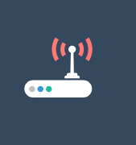

<!--
  Generated template for the MikrotikPage page.

  See http://ionicframework.com/docs/components/#navigation for more info on
  Ionic pages and navigation.
-->
<ion-header>

  <ion-navbar color="nav">
      <button ion-button menuToggle>
          <ion-icon name="menu"></ion-icon>
      </button>
    <ion-title>mikrotik</ion-title>
  </ion-navbar>

</ion-header>


<ion-content padding>
<ion-grid>
  <ion-row>
    <ion-col col-6 *ngFor="let i of list">
      
      <p style="text-align: center" (click)="detail(i)">{{i}}</p>
    </ion-col>
  </ion-row>
</ion-grid>
</ion-content>
